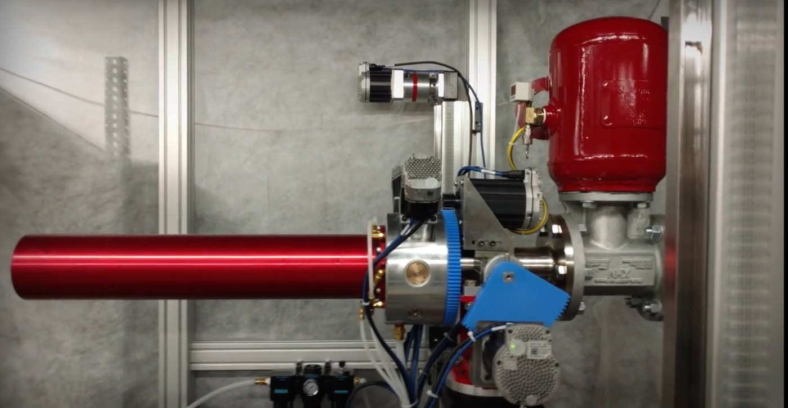
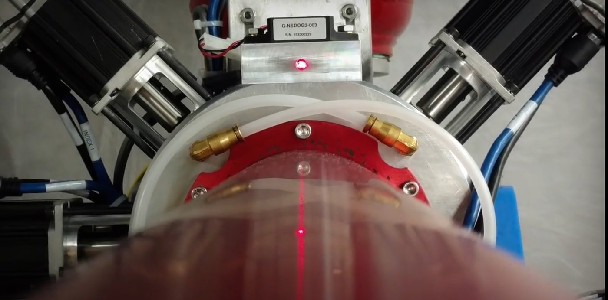
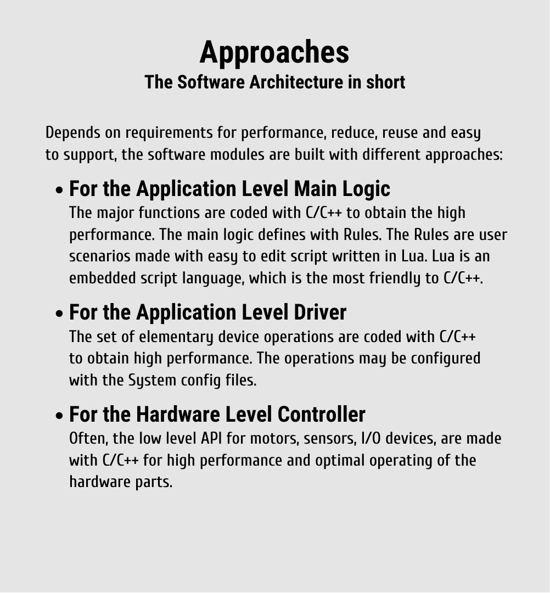

2021–2022 · Phoenix Baseball Systems (EE. UU.)
Simulador de lanzamientos FireBall: arquitectura del sistema de control
FireBall es un simulador neumático de lanzamientos que reproduce lanzamientos reales de la MLB sincronizados con el vídeo del lanzador. Me contrataron para diseñar su sistema de control embebido y comencé la implementación.


La tarea
Seis ejes servo (cabeceo, alabeo, guiñada, Z y dos motores de efecto de hasta 3200 rpm), 13 salidas discretas (electroválvulas, láser, pilotos, alarma), sensores analógicos (inclinación, presión, presencia de bola), reproducción de vídeo sincronizada, una API RESTful y una interfaz web inalámbrica con roles, todo en un ordenador de placa única NXP i.MX8M (Nitrogen8M).
Arquitectura propuesta




Descargar el documento completo (PDF)
Los escenarios de lanzamiento son reglas en Lua; las acciones elementales de la máquina son controladores de aplicación en C; debajo están las API de hardware de los fabricantes; todo se conecta mediante un bus del sistema. Esta misma estructura por capas llegó después a producción en el firmware de routers.
Qué hice
- Analicé los requisitos del cliente y propuse la arquitectura por capas descrita arriba.
- Porté ubus y UCI de OpenWrt a Ubuntu (el sistema de destino era Ubuntu Core), para que el controlador pudiera usar las mismas herramientas que los dispositivos OpenWrt.
- Escribí la primera parte del motor de reglas en C: modelo de datos (módulos, reglas, variables con fuentes UCI / ubus / constantes, valores tipados), una caché de valores por ciclo y un bucle de evaluación basado en uloop.
- Negocié el proyecto en inglés y redacté el contrato con cuatro anexos: entrega del MVP por etapas (planificación, estimación, investigación, desarrollo, demostración con código fuente), calendario de pagos, equipo compartido y riesgos de plazos.
- Definí el MVP-1: un banco de pruebas que integra los servomotores, el dispositivo de E/S, los relés y el sensor de inclinación.
El proyecto se suspendió a principios de 2022, cuando el kit de hardware no pudo enviarse a Rusia.